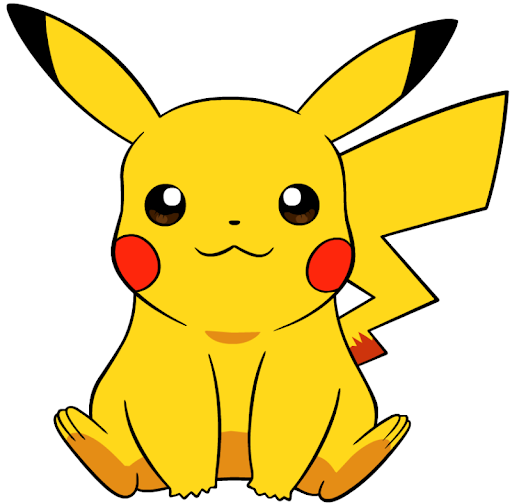

포켓몬스터는 개발사인 게임 프리크의 사장인 타지리 사토시가 6년간의 고생 끝에 낳은 결실인데, 게임 출시에 6년이라는 오랜 세월이 걸린데에는 비하인드 스토리가 있다.
포켓몬스터는 원래 닌텐도 산하의 APE[10]에서 개발금을 투자받아 1991년에 완성하여 납품하기로 약속하였는데, 타지리 사토시의 개발욕심에 의하여 당초 기획보다 더 많은 아이디어를 계속 추가하면서 개발기간이 길어졌고, 개발자들 간의 트러블에 의하여 몇몇 개발자는 퇴사를 하고 벤처기업이다보니 게임 개발 경험도 다들 없었고 재정적으로도 어려움을 겪었고 개발지옥에 빠진 상태였다.
그래서 APE 소속 프로듀서인 이시하라 츠네카즈는 개발이 시작된지 반 년만에 포켓몬스터 개발을 잠시 중단하고 그동안 하청을 받아가면서 개발비를 벌고 스태프들도 게임 제작 경험을 쌓은 뒤 포켓몬스터를 다시 개발하자고 제안을 하게된다. 그래서 닌텐도에게 게임을 하청을 받아 제작하게 되는데, 당시 하청을 맡아 제작한 게임은 요시의 알(GB)과 마리오와 와리오(SFC)다.
